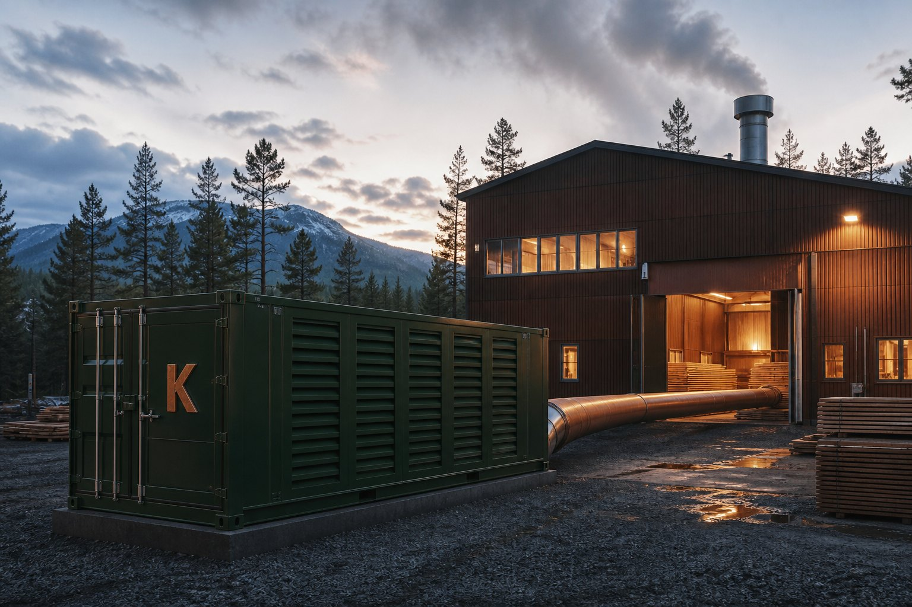
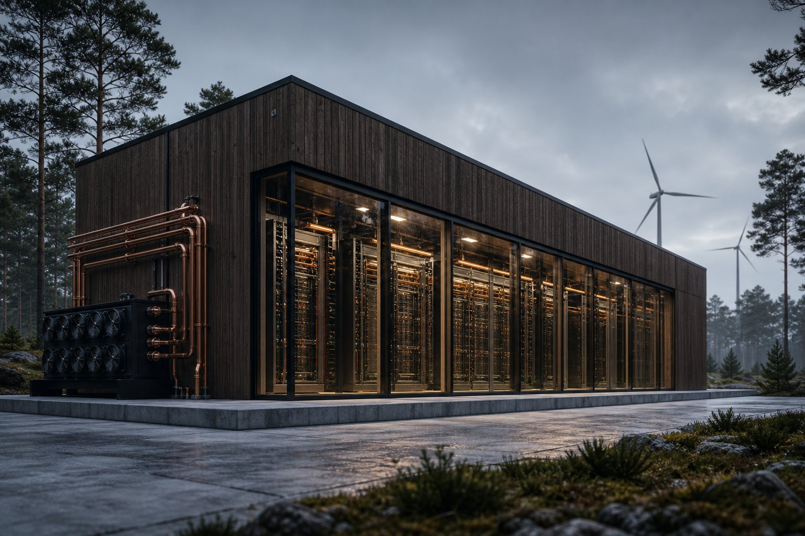
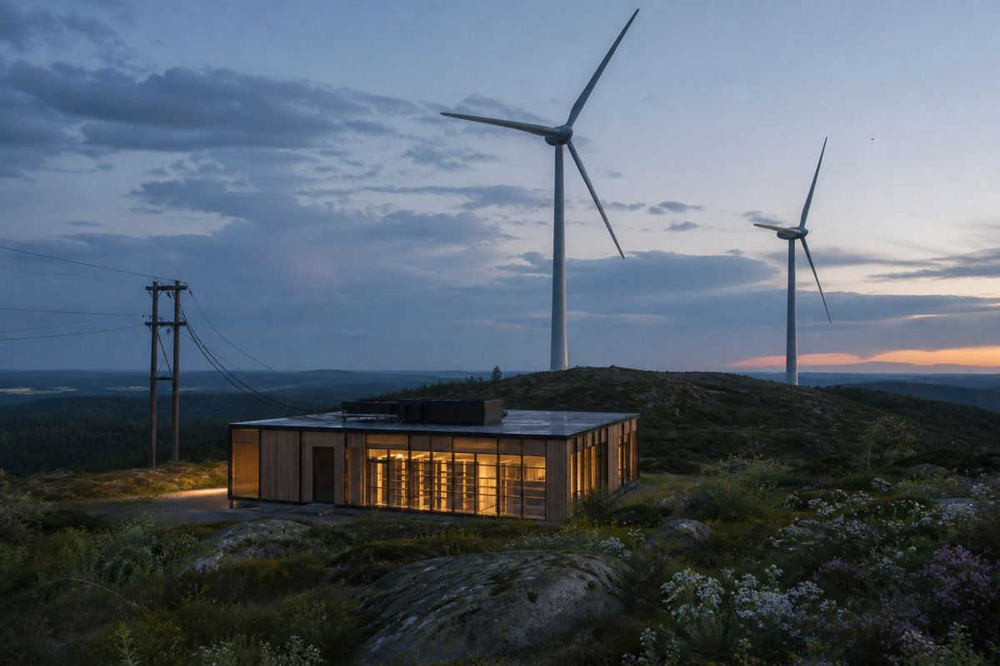
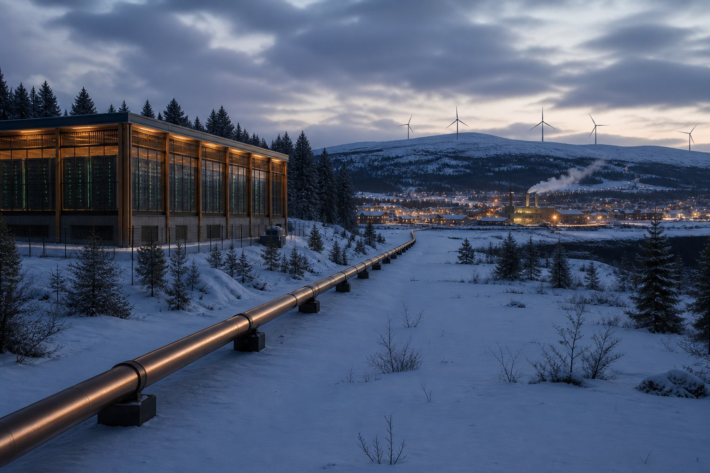

Thermal/Heat
Once as Compute, once as Heat
Every kilowatt of Compute leaves as Heat. An asset — not a side effect.

Destinations
At the mill. On the pipe.
Heat that already has somewhere to go.
-
Mill
Process on site
Local process Heat at the mill — premises and the line you already run.
Drying, kilns, process.
-
Pipe
Into the network
Pipe into an existing district network. Homes on the pipe.
Heat into the network that already serves buildings.
-
Municipal
Municipal network
A pipe into an existing network where a sink is already on site.
Destinations confirmed at the plot.
-
District
District Heat
District Heat is over half of Heating in Swedish homes and premises.
Heat for homes and premises on the network.
-
Glass
Greenhouses
Heat into horticulture next to the pad. Grade confirmed at the plot.
A sink that wants the stream.



01 Industrial
01 / 07
Local process Heat at the mill — premises and the line you already run.
Grade confirmed at the plot. Seasonal storage, where it appears, is a siting option next to a sink.
Offtake
Homes on the network. Not home Compute.
District Heat for homes. Process Heat on site.
-
01
Residential Heat
A Flexbox can feed that pipe.
-
02
Industrial / manufacturing
The flange is sized to the line you already run — drying, kilns, process.
-
03
Municipal network
We do not take over the utility.
-
04
District Heat offtake
Offtake is a published market, not Kelvin’s tariff.
A paused unit is not a baseload boiler. Heat follows the load. See Flexibility and Compute.
Capture
Capture designed in.
Closed-loop liquid cooling makes the Heat stream recoverable. Retrofit of capture onto a hall that was never plumbed for offtake is the expensive path.
-
01
Usable temperature
Liquid cooling is what makes the Heat stream recoverable at usable temperature — toward district supply.
-
02
Air or liquid
Forced air or liquid. Closed-loop on the unit. Four racks, Heat loop, 40 ft ISO. The flange ships with the unit.
-
03
Not a dump, then a pipe
A hall built only to vent cannot be cheaply turned into offtake later.
-
04
Heat is tier-independent
Whichever load runs, the sink still has a stream. A paused unit is not a baseload boiler.

Grade
A data centre is a Heat engine that does arithmetic on the way through. Thirty-three kelvin, sold twice.
The stem is the site: upper arm power arriving, lower arm Heat leaving, Compute at the vertex.
Rack outlet ~305 K. The span between the rack outlet and the district supply is the whole business.
Kelvin is named for the unit.
When the sink is next to the pad, a modular data centre is a municipal Heat plant. One kilowatt-hour, twice.
The flange
Kelvin sizes the flange.
The sink is local on site, and municipal or district where a network exists.
-
01
Flange
A flange sized to the sink. Grid (LV or MV) into the Flexbox; Heat flange out.
-
02
Distance
The sink has to be within reach of the pad. A Heat offtake already on site, or a pipe that can be.
-
03
Temperature
Rack outlet ~305 K; district supply ~338 K. Grade confirmed at the plot.
-
04
Who owns the loop
The host or the network owns the loop. Destinations confirmed at the plot.
Heat on the unit · Energy · The unit · Home